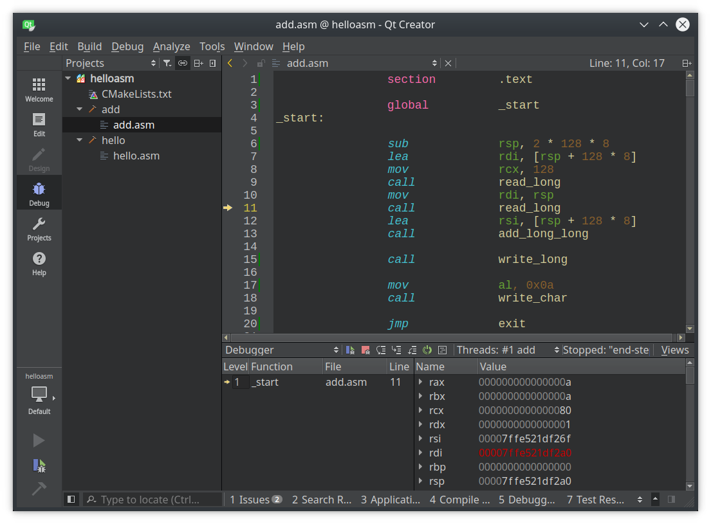

По адресу http://github.com/sorokin/cpp-course лежит пример двух программ на ассемблере. Программа hello.asm — это программа выводящая строку "Hello, world". В ней подробно прокомментирована каждая строчка. Программа add.asm — это программа, которая выполняет сложение двух длинных чисел.
Вам необходимо разобраться в этих примерах и написать на их основе программы выполняющие вычитание и умножение беззнаковых длинных чисел.
Обратите внимание, что приведенные примеры заточены на конкретную архитектуру процессора (x86-64), конкретный ассемблер (NASM) и операционную систему (Linux).
Разрешается писать программы под другие архитектуры, ассемблеры и операционные системы, при этом вам придется самим переписать код на нужную архитектуру и разобраться как сделать ввод-вывод. Если вы будете делать программу под архитектуру отличную от x86_64 или i386, предварительно согласуйте это со мной.
Для того, чтобы запустить примеры на понадобится любой 64-битный дистрибутив Linux. Чтобы проверить битность вашего дистрибутива, можно исполнить команду:
Если команда выводит x86_64, то система 64-битная, если i386 или i686 — 32-битная.
Для работы нам потребуются следующие инструменты:
Чтобы установить эти программы (в Debian-based дистрибутивах) необходимо исполнить команду:
Чтобы взять исходный код примеров необходимо исполнить команду:
После этого в текущем каталоге появится каталог cpp-course. Заходим внутрь:
Проверяем, что всё компилируется:
В текущем каталоге должны появится файлы hello и add. Проверяем, что всё работает:
Чтобы редактировать код в IDE, необходимо запустить Qt Creator:
И попытаться открыть файл helloasm/CMakeLists.txt.

Известная особенность: поскольку мы не создаем корректных стековых фреймов и не генерим dwarf-символов для отладки, то отладчик не может корректно показать стек вызовов (видно на скриншоте), по этой же причине иногда не работает Step Over (F10).